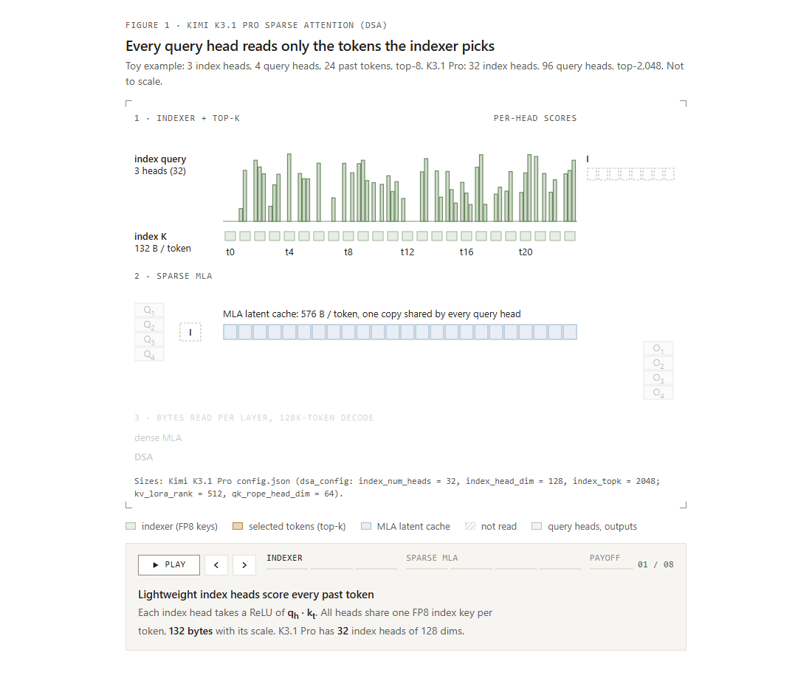
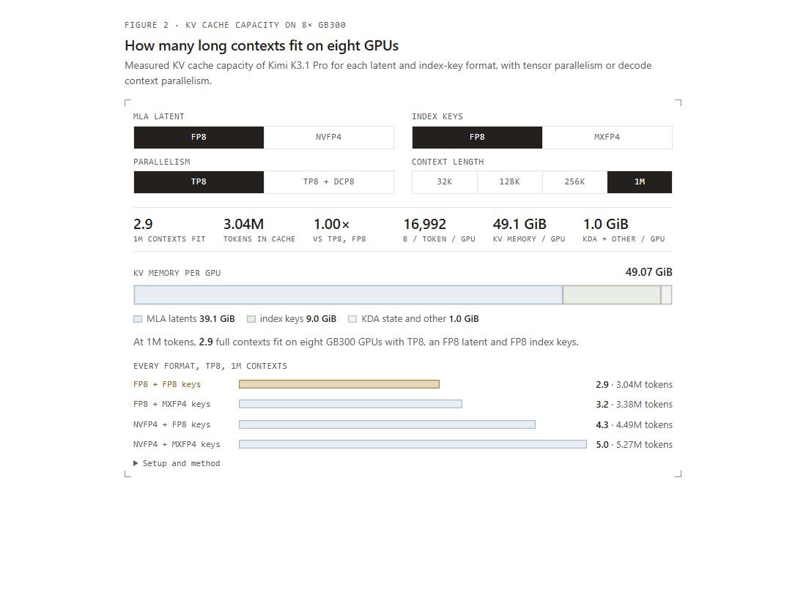
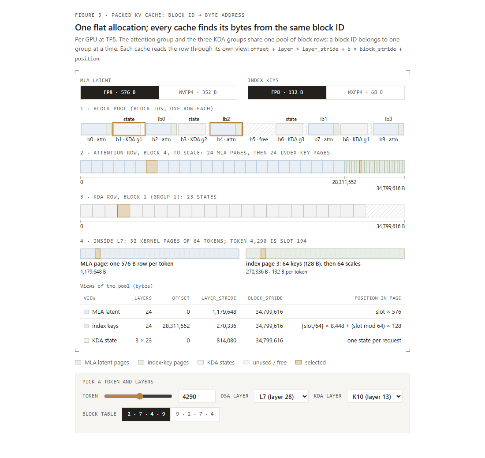
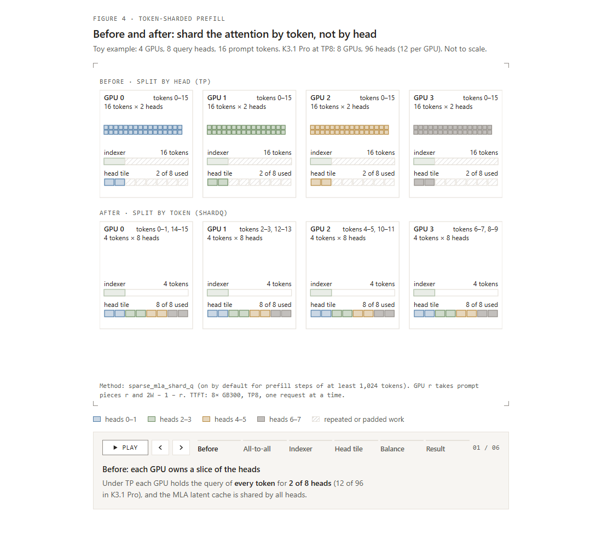
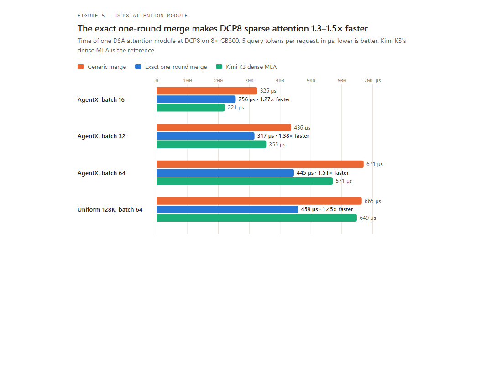
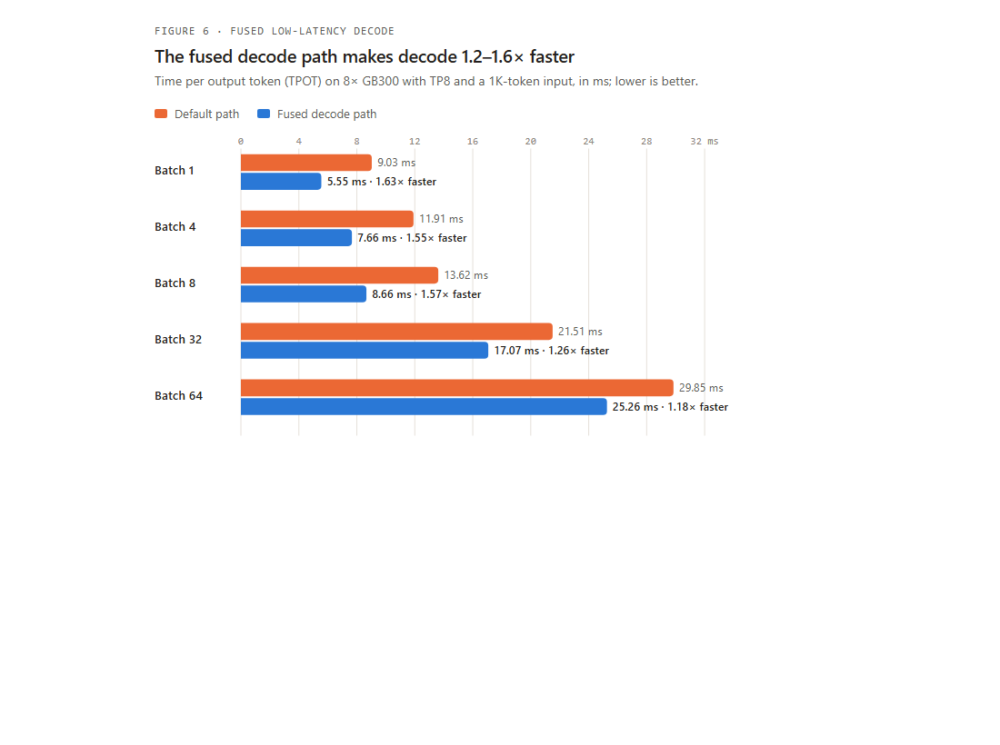
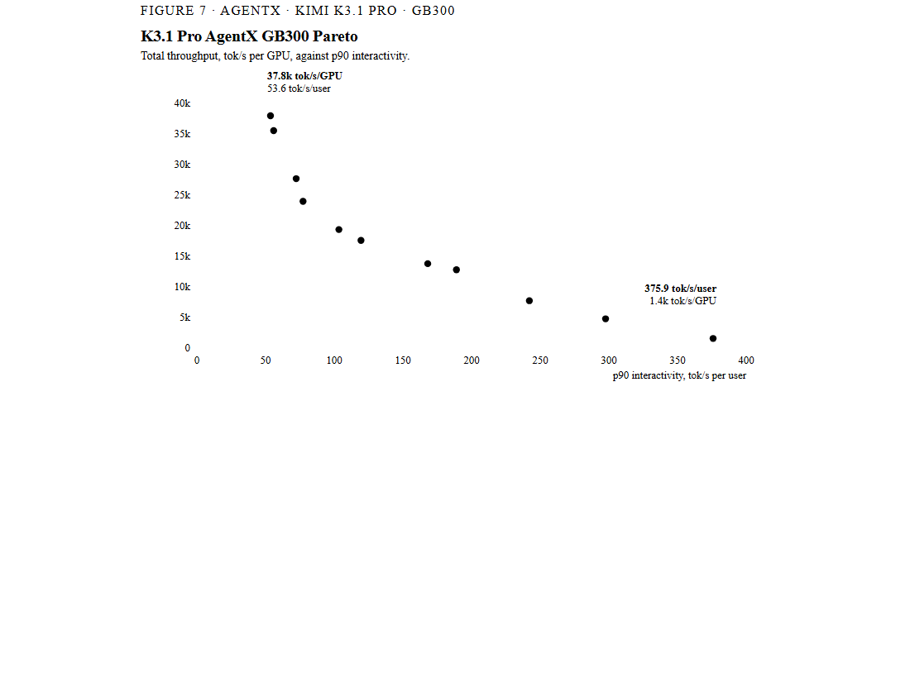
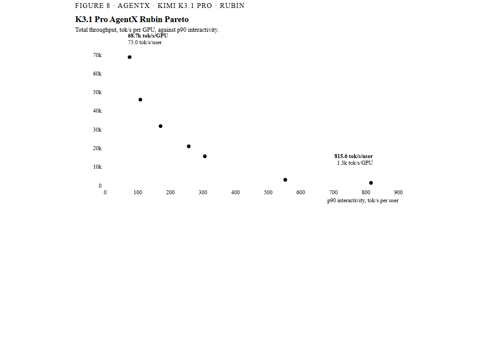
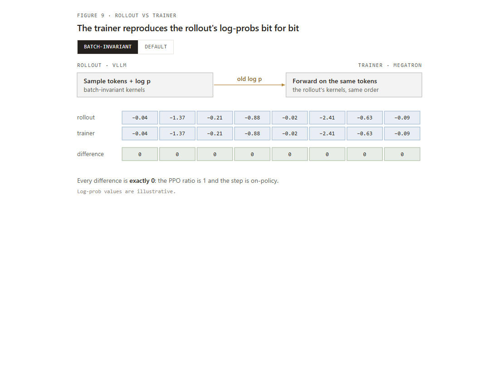
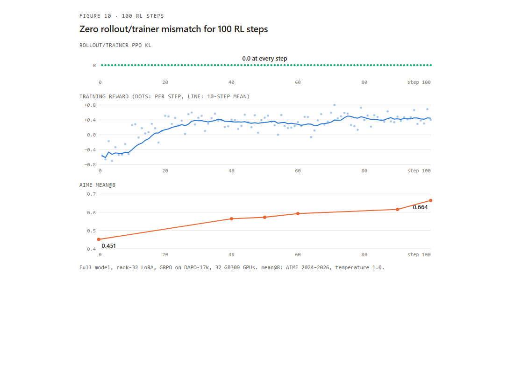

vLLM 首日支持 Kimi K3.1 Pro
Kimi K3.1 Pro 是 Moonshot AI 能力最强的开放权重模型：一个总参数量 2.8 万亿、每 token 激活 1040 亿参数、支持 100 万 token 上下文的原生多模态 MoE。在编程、智能体和知识基准中，它的表现可媲美最强的闭源模型。
最大的变化来自注意力：为提升效率，K3.1 Pro 在全部 24 个全注意力层中加入了稀疏注意力 DSA。vLLM 从发布首日即支持在 NVIDIA GPU、AMD GPU、Google TPU 和阿里巴巴平头哥真武 PPU 上运行该模型。
要点速览
- 混合模型上的稀疏注意力： K3.1 Pro 保留 K3 的 KDA + MLA 混合架构，并在全部 24 个 MLA 层中加入 DSA 索引器。在长上下文下，一个解码步骤每层读取的字节数约为稠密 MLA 的四分之一。
- 一个 KV 缓存容纳三类状态： vLLM 将每个 block 的 MLA latent、索引器 key 和 KDA 状态打包在一起。打包缓存支持 FlashInfer、FlashMLA sparse 内核、FP8 或 NVFP4 KV，以及可选的 MXFP4 索引 key；预填充/解码分离时可以原样传输。
- 按 token 分片的预填充注意力： 在 8× GB300、340K token 下，相比按注意力头分片，TTFT 最多加速 1.69 倍。
- 带稀疏索引器的解码上下文并行（DCP）： 精确 top-k 合并将流量降低约 10 倍，使 DCP8 的注意力模块加速 1.3～1.5 倍。DCP 预填充注意力每层加速 4.1～4.3 倍，DCP8 可容纳的 KV token 是 TP8 的 7.2 倍。
- 融合低延迟解码： Kimi K3 的专用 CuTe DSL 解码路径现在覆盖 DSA 层，在 8× GB300 上将解码加速 1.2～1.6 倍，在 DCP8 下加速 1.9 倍。
- 智能体服务： SemiAnalysis AgentX 基准中，NVIDIA GB300 的低延迟端达到每用户 375.9 token/s，吞吐端达到每 GPU 37.8K token/s；NVIDIA Rubin 分别达到每用户 815.6 token/s 和每 GPU 68.7K token/s。
- 首日零偏差 RL： vLLM 的首日支持首次同时提供零偏差强化学习。基础模型和 LoRA 适配器在 vLLM 与 Megatron 中产生逐 bit 相同的 log-prob，因此一次 100 步全模型运行中，每一步 PPO KL 都精确为 0。
快速开始
在 NVIDIA GPU 上：
# Docker 镜像和多节点命令请参阅 Kimi K3.1 recipe。
vllm serve moonshotai/Kimi-K3.1-Pro \
--tensor-parallel-size 8 \
--trust-remote-code \
--load-format fastsafetensors \
--enable-auto-tool-choice \
--tool-call-parser kimi_k3 \
--reasoning-parser kimi_k3 \
--speculative-config '{"model":"Inferact/Kimi-K3.1-Pro-DSpark-preview","num_speculative_tokens":5,"method":"dspark","draft_sample_method":"probabilistic"}'
在 AMD GPU 上：
VLLM_ROCM_USE_AITER=1 SAFETENSORS_FAST_GPU=1 \
vllm serve moonshotai/Kimi-K3.1-Pro \
--served-model-name kimi-k31-pro \
--tensor-parallel-size 8 \
--trust-remote-code \
--load-format fastsafetensors \
--max-num-seqs 16 \
--gpu-memory-utilization 0.85 \
--speculative-config '{"model":"Inferact/Kimi-K3.1-Pro-DSpark-preview","num_speculative_tokens":5,"method":"dspark","draft_sample_method":"probabilistic"}'
Kimi K3.1 Pro 的新变化
| 项目 | Kimi K3 | Kimi K3.1 Pro |
|---|---|---|
| 层数 | 93：69 个 KDA + 24 个全注意力层 | 93：69 个 KDA + 24 个全注意力层 |
| 全注意力层 | 稠密 MLA | MLA + DSA 索引器（top-2048），NoPE |
| 索引器 | 无 | 32 个头 × 128 维，FP8 key |
| MoE | 896 个专家，激活 16 个，MXFP4 | 不变 |
| 上下文窗口 | 100 万 | 100 万 |
| 总参数量 | 2.8 万亿 | 2.8 万亿 |
K3.1 Pro 中的稀疏注意力
每个稀疏注意力层都在 MLA 注意力旁边放置一个小型索引器。索引器为每个 token 保存一个 FP8 key（含尺度共 132 字节），通过 32 个轻量头为每个 query 的所有历史 token 打分，然后保留得分最高的 2,048 个 token。MLA 注意力仍进行精确计算，但只在这 2,048 个 token 上执行。DSA 最早在 DeepSeek-V3.2 中提出；更多索引器细节可参阅我们的 DeepSeek-V3.2 文章。
收益在受内存带宽限制的长上下文解码中最明显。稠密 MLA 每层、每个上下文 token 要读取 576 字节 FP8 latent。DSA 仍会扫描完整上下文，但扫描的只是 132 字节索引 key，随后仅为 2,048 个 token 读取完整 latent。在长上下文中，每层读取量约为稠密 MLA 的 23%。
查看静态备用图

图 1：Kimi K3.1 Pro 的稀疏注意力（DSA）。索引器为所有历史 token 打分，保留 top 2,048，每个 query 头只对这些 token 的 latent 进行精确注意力计算。
KV 缓存占用
索引 key 是 MLA latent 旁边的第二类逐 token 缓存。在张量并行（TP）下，两者都会在每张 GPU 上复制；KDA 状态与 K3 相同，以请求为单位保存。
| 每张 GPU、每 token 的 KV 缓存（24 个全注意力层） | 字节数 |
|---|---|
| Kimi K3，FP8 MLA latent | 13,824 |
| Kimi K3.1 Pro，FP8 latent + FP8 索引 key | 16,992 |
| Kimi K3.1 Pro，NVFP4 latent + MXFP4 索引 key | 10,080 |
latent 与索引 key 可以独立量化。仅使用 NVFP4 latent，K3.1 Pro 的占用就已经低于使用 FP8 的 K3；选择 MXFP4 索引 key 后又可多容纳 11% 的 token，并使长上下文索引器加速 10%～20%。两者同时启用时，8 张 GB300 容纳的 token 数是 FP8 的 1.7 倍；DCP8 又将其提高约 7 倍：可同时容纳约 36 个完整的 100 万 token 上下文，而使用 FP8 的 TP8 只能容纳 3 个。
查看静态备用图

图 2：8× GB300 上实测的 KV 缓存容量。可切换 latent 和索引 key 格式、并行方式或上下文长度，查看能容纳多少个完整上下文。
一个 KV 缓存容纳三类状态
每个 DSA 层保存宽度不同的两类逐 token 缓存：MLA latent（FP8 为 576 字节，NVFP4 为 352 字节）和索引 key（FP8 为 132 字节，MXFP4 为 68 字节），两种宽度互不成整数倍。69 个 KDA 层还各自增加一份逐请求循环状态，其大小远大于单层的一页 token。如果所有层都使用相同大小的 page，小 page 就必须填充到最大 page 的尺寸。
vLLM 按 block 而非按层打包缓存。缓存的一个 block 是一行连续内存，其中包含全部 24 个 DSA 层在该 block 中的 MLA page 和索引 key page，以及共享该 block 的 KDA 状态。一行内的 page 可以大小不同，唯一约束是该行能够容纳 KDA 状态。block 大小为 2 的幂，因此采用不同 TP 尺寸的预填充和解码实例，其 block 可以整除并配对进行 KV 传输。
注意力内核仍然看到自己所期望的小型定长 page。每一步执行前，vLLM 会把 block table 和 cache slot 转换为内核 page 地址，因此 FlashInfer、FlashMLA 的 sparse MLA 内核以及 DeepGEMM 索引器内核无需修改即可读取打包缓存。
这种布局使其余服务栈得以正常工作：
- 任意 sparse MLA 内核和 KV 格式。 Blackwell 默认使用 FlashInfer sparse MLA 和 FP8 latent；FlashInfer 新的 PrimsTS 内核也支持 NVFP4 latent。
- 分离式服务。 每个 block 是一段连续内存，P/D 传输只需一次大型 RDMA 读取，而不需要几十次逐层小读取。
- 共享基础设施。 同一打包规划器也服务 GLM-5.3-Flash 和 DeepSeek-V4，它们同样面临不同 page 大小混合的问题，参见 DeepSeek V4 文章。
查看静态备用图

图 3：TP8 下的打包缓存布局。注意力组和三个 KDA 组共享同一 block row 池；可选择 token、DSA 层和 KDA 层，查看它们落入哪个 block 和 page。
预填充：按 token 而非注意力头分片
在 TP8 下，每张 GPU 持有 K3.1 Pro 96 个注意力头中的 12 个。与 GLM-5.3 文章中说明的原因相同，这种布局不适合 sparse MLA 预填充：
- MLA latent KV 由所有头共享，因此每张 GPU 为了服务 12 个头仍要读取完整缓存；sparse 内核还必须把 12 个头填充到最小 tile。
- 索引器完全不按头拆分，每张 GPU 都会为所有 token 打分，因此二次复杂度工作重复了 8 次。
对于大型预填充步骤，vLLM 改为按 token 拆分注意力。一次 all-to-all 将每张 GPU 的 query 从“全部 token、12 个头”转换成“八分之一 token、全部 96 个头”。每张 GPU 为自己的 token 运行索引器和 sparse MLA，第二次 all-to-all 再把输出恢复为按头布局。TP 下 KV 缓存本就已复制，因此其他部分无需改变；MoE、序列并行和缓存布局保持不变。为了平衡因果注意力，每个请求被切成 16 段，GPU r 处理第 r 段和第 15 − r 段，与预填充上下文并行采用相同的平衡拆分。两次 all-to-all 都直接写入对端的对称内存。
查看静态备用图

图 4：四张 GPU 上按 token 分片预填充的前后变化。按头拆分时，每张 GPU 都重复索引器并填充 head tile；all-to-all 后，每张 GPU 使用全部注意力头，只为一份平衡的 token 分片打分。
在 8× GB300、TP8、真实权重、单请求条件下，结果如下：
| 提示 token 数 | 按头分片 TTFT | 按 token 分片 TTFT | 加速比 |
|---|---|---|---|
| 27K | 0.82 s | 0.71 s | 1.16× |
| 108K | 3.72 s | 2.89 s | 1.29× |
| 340K | 15.89 s | 9.42 s | 1.69× |
智能体多轮中常见的“在长缓存前缀后追加少量 token”也会受益。在 150K-token 缓存前缀后追加 2K token 时，每张 GPU 的索引器和 sparse MLA 内核耗时从约 56 ms 降至 15 ms（8× GB300，FlashInfer sparse MLA），代价是每张 GPU 约 0.8 GiB KV 缓存的交换缓冲区。
长上下文：结合稀疏索引器的解码上下文并行
TP 会在每张 GPU 上复制 MLA latent，因此增加 GPU 并不能增加 KV 容量。解码上下文并行（DCP）改为按 token 分片缓存：宽度为 W 的组中，GPU r 保存每隔 W 个 token 的一个 token。对于稠密 MLA，每张 GPU 在自己的分片上执行注意力，再通过 log-sum-exp（LSE）合并局部输出。
DSA 多出一步：每张 GPU 只能为自己的 1/W token 排名，因此每层开始注意力前都必须跨 GPU 合并全局 top 2,048。
流量降低 10 倍的精确 top-k 合并
通用合并方案会把每张 GPU 的完整本地 top 2,048 以 FP32 分数和 token ID 对的形式发送给其他所有 GPU。在 8× GB300 的 DCP8 上，64 个类似 AgentX 的请求、每个请求 5 个 query token 时，这一步占整个 671 µs 注意力模块中的 258 µs。
vLLM 发送的数据少得多。每张 GPU 直接从 BF16 分数中仅选择最优的 1.5 × 2,048 / W 个候选，并把每个候选及其分数打包进 32 bit，字节数约少 10 倍。随后，每张 GPU 都从收集到的候选中独立执行相同的 radix select，得到全局 top 2,048。合并仍是精确的：如果某张 GPU 实际持有的全局 top 2,048 数量超过了它所发送的数量，select 会检测到这种情况，该 GPU 将为对应行重新发送完整本地 top-k。
查看静态备用图

图 5：8× GB300、DCP8、每个请求 5 个 query token 时的单个 DSA 注意力模块。精确单轮合并比通用合并快 1.27～1.51 倍。
从 batch 32 开始、上下文达到 128K 时，K3.1 Pro 在 DCP8 下的稀疏注意力已经快于 K3 的稠密 MLA。
随后，局部注意力输出通过对称内存上的两个 CuTe DSL 内核交换并以 LSE 合并：在 8× GB300 的 320 种 BF16 形状上，比现有 CUDA 实现最高快 3.7 倍，同时输出逐 bit 一致。该优化可惠及 DCP 下的所有 MLA 模型。
无需合并的 DCP 预填充
直接使用 DCP 预填充，会为每个提示 token 支付合并和 LSE combine 的开销，并在每张 GPU 上重复注意力工作。当 DCP 组就是 TP 组时，vLLM 会把本步骤的上下文——包括 MLA latent 和索引 key——从所有 GPU 收集到对称内存工作区中；使用 FP8 时，每张 GPU、每 100 万 token 约需 0.7 GB。之后在工作区上运行上一节的按 token 分片预填充，因此无需 merge 或 combine，输出与不使用 DCP 的按 token 分片预填充逐 bit 一致。
| 8× GB300、DCP8、AgentX 混合 16K-token 步骤中的单个 DSA 层 | DCP 预填充 | 收集上下文后的预填充 |
|---|---|---|
| FP8，FlashInfer trtllm-gen | 24.8 ms | 5.8 ms（4.3×） |
| FP8，FlashInfer PrimsTS | 24.8 ms | 5.7 ms（4.3×） |
| NVFP4，FlashInfer PrimsTS | 25.7 ms | 6.2 ms（4.1×） |
端到端看，DCP8 下单请求预填充与 TP8 一样快：27K、108K 和 340K token 下分别为 1.10、4.40 和 14.61 s，而 TP8 为 1.10、4.39 和 14.50 s（8× GB300，FP8 KV）。
何时使用 DCP
DCP 以每步延迟换取 KV 容量：DCP8 将每 GPU 的 MLA 与索引 key 缓存缩小到八分之一，而 KDA 状态本就按头拆分。当上下文能够放入显存时，普通 TP 在低并发下解码更快；当 KV 成为瓶颈时，例如超长上下文或大量长生命周期智能体会话，DCP 才开始获益。8× GB300 上，DCP8 可容纳 2180 万个 FP8 KV token，而 TP8 为 304 万；使用 NVFP4 latent 时分别为 3210 万和 449 万。并发度 1、32K 上下文时，TP8 与 DCP8 的 TPOT 分别为 9.35 ms 和 11.48 ms；128K 上下文时分别为 9.45 ms 和 11.58 ms。融合解码路径可将 DCP8 分别降至 5.96 和 6.04 ms。
TP8 的八张 GPU 也能服务完整的 100 万 token 请求：8× GB300 配合 FP8 KV 时，缓存可容纳 304 万 token，即约 2.9 个并发的 100 万 token 请求。
低延迟解码：融合 DSA 解码路径
对于 Kimi K3，vLLM 提供一条可选解码路径，用针对小 batch 调优的 CuTe DSL 内核替代几乎所有算子。它把通信融合进计算、重构 MoE 调度，并把权重预取到 L2，详见在 vLLM 中极致优化 Kimi K3。在 K3.1 Pro 中，这条路径现在覆盖 DSA 层。一个 DSA 层按以下方式执行：
- 一次打包输入投影，同时计算 query、KV latent、输出 gate，以及索引器的 key 和 head 权重；
- 融合索引器前端：在一个内核中完成 query norm、索引器 query 投影、将 head 权重折叠进 FP8 或 MXFP4 量化，以及新 token 的索引 key；
- MLA query：执行上投影和吸收后的 key 投影，并把新 token 的 latent 写入 KV 缓存；它与索引器重叠执行，而不是提前串行运行；
- 融合索引器：一个 key-balanced scorer 加精确 top-k select，由两个内核直接输出注意力将读取的物理 KV 行；
- 稀疏注意力：根据 batch 大小选择 FlashInfer sparse MLA（trtllm-gen 或 PrimsTS）或 FlashMLA sparse；在 DCP、batch 1～8 下使用为该形状定制的 CuTe DSL 内核，batch 1 时每层 11.9 µs，而普通路径为 21.4 µs；
- 在一个内核中完成 value 投影和 sigmoid gate，随后接上 K3 融合 all-reduce 的输出投影。
DCP 下，query 会发布到所有 GPU；各 GPU 的 top-k 候选通过交换后精确合并；局部输出通过 LSE 合并。所有过程都使用内核内部的 NVLink mailbox，路径中没有 NCCL collective。
查看静态备用图

图 6：8× GB300、TP8、1K-token 输入下的单输出 token 时间。融合解码路径在 batch 1 时快 1.63 倍，在 batch 64 时仍快 1.18 倍。
配合 DSpark 推测解码（7 个草稿 token），融合路径将并发度 1 的单 token 时间从 2.86 ms 降至 2.14 ms，GSM8K 准确率不变。DCP8 下，32K 上下文时并发度 1 的 TPOT 从 11.48 ms 降至 5.96 ms；128K 时从 11.58 ms 降至 6.04 ms。
使用 DSpark 的推测解码
我们为 K3.1 Pro 训练了 DSpark 推测器，并发布预览检查点：Inferact/Kimi-K3.1-Pro-DSpark-preview。在真实采样设置（温度 1.0、top-p 0.95）下，使用 7 个草稿 token 时，该预览版在 GSM8K 上的平均接受长度已经达到 4.597。在 8× GB300、TP8、batch 1 下，对应 3.0 倍解码加速。根据长上下文 BEAM 基准测量，推测器在 K3.1 Pro 最大 100 万 token 上下文范围内也能保持准确率。
该检查点只是预览版。我们正在训练更准确、更高效的推测器，并将很快发布。
智能体服务：AgentX
vLLM 在智能体服务工作负载上表现强劲。我们使用 SemiAnalysis AgentX，在 NVIDIA GB300 和 NVIDIA Rubin 上评测了首日镜像。
NVIDIA GB300
在帕累托前沿的低延迟端，Kimi K3.1 Pro 达到每用户 375.9 token/s。沿前沿提高吞吐后，它仍能让每位用户保持在 100 token/s 以上，同时达到每 GPU 19.2K 总 token/s。在吞吐端，每 GPU 达到 37.8K token/s，约为最高交互性配置的 26 倍，同时每位用户仍能获得约 54 token/s。
查看静态备用图

图 7：NVIDIA GB300 上 Kimi K3.1 Pro 的 AgentX 帕累托前沿，使用 4 个推测 token 和合成的 3.36 token 接受长度。
NVIDIA Rubin
在 NVIDIA Rubin 上，低延迟端达到每用户 815.6 token/s。沿前沿提高吞吐后，它仍可让每位用户保持在 100 token/s 以上，同时达到每 GPU 46.0K 总 token/s。在吞吐端，每 GPU 达到 68.7K token/s，约为最高交互性配置的 51 倍，同时每位用户仍能获得约 75 token/s。
查看静态备用图

图 8：NVIDIA Rubin 上 Kimi K3.1 Pro 的 AgentX 帕累托前沿。并发度不高于 64 的点使用 7 个推测 token 和合成的 3.84 token 接受长度；更高并发使用 3 个推测 token 和 3.0 接受长度。
首日零偏差强化学习
vLLM 的首日支持首次同时交付零偏差 RL：使用 verl 进行 LoRA RL，以 vLLM 作为 rollout 引擎、Megatron 作为训练器，训练器的 log-prob 与 rollout 逐 bit 相同。它不再通过重要性采样或路由重放限制差距，而是在内核层消除差距：训练器前向传播逐 bit 复现 rollout，将 RL 训练稳定性提升到新的水平。
- 覆盖整个模型的 LoRA RL。 Rank-32 LoRA 覆盖所有注意力投影和全部 896 个专家；基础模型和适配器在 vLLM 与 Megatron 之间都逐 bit 一致。
- 原生 batch-invariant 内核。 设置
VLLM_BATCH_INVARIANT=1后，一个 token 的 log-prob 不依赖它所在的 batch。越来越多 vLLM 高性能内核从设计上就满足 batch invariant，例如 DeepSelect top-k。
查看静态备用图

图 9：相同 token、相同内核、相同 log-prob。可切换到默认 rollout 进行比较。
在全模型上运行 100 步时，每一步 rollout/训练器 KL 都精确为 0.0，而 AIME mean@8 从 0.451 提高到 0.664。
查看静态备用图

图 10：全模型上的 100 步 LoRA RL 运行。
batch-invariant 路径的性能优化仍在继续，源代码位于 Inferact/zero-mismatch-rl。
AMD
在 AMD Instinct MI355X 上，vLLM 将 MXFP4 索引、稀疏注意力和解码上下文并行结合起来。这些优化降低了长上下文的内存需求，并提高预填充和解码效率。
量化：原生 MXFP4 索引器
索引器会扫描上下文，再为注意力选出 2,048 个 token。MXFP4 将每个索引 key 从 FP8 的 132 字节降到 68 字节（均含尺度），索引缓存存储减少 48.5%。打分使用原生 FP4 矩阵指令、FP32 累加，并在不同头间执行加权归约。在推测验证期间，key 会跨 query 行复用，以减少重复读取。
更小的索引缓存可为上下文缓存留出更多 GPU 内存，尤其有利于高并发长上下文服务。在 AgentX 扫描中，并发度 48 时，MXFP4 索引器配置将总工作负载吞吐提高 5.3%。
预填充：上下文并行稀疏注意力
预填充期间，GPU 会收集索引 key，并在彼此间划分 query 行。每张 GPU 用完整上下文为分配给自己的行打分，并直接选择全局 top-k，无需合并各 rank 候选。主注意力可以在通信量更小且工作区允许时单独收集 KV，再为本地注意力头处理所有 query 行。
开发基准中，组合的 DCP 预填充优化同时提高了吞吐并降低了延迟。
| 输入/输出 token | 总吞吐量（token/s） | 输出吞吐量（token/s） | TTFT 中位数（s） | TPOT 中位数（ms） |
|---|---|---|---|---|
| 8K / 1K | 5,357.8 → 6,015.4（+12%） | 595.3 → 668.4 | 2.462 → 1.875 | 24.571 → 22.063 |
| 128K / 100 | 6,950 → 17,678（+154%） | 5.30 → 13.48 | 268.7 → 105.5 | 331.5 → 129.6 |
设置：MI355X、TP8/DCP8、并发度 16、64 个提示、关闭前缀缓存。
FlyDSL sparse MLA 直接从 FP8 KV 缓存读取选中的 token。每个 workgroup 为本地注意力头处理一行 query，从而利用预填充步骤中的大量 query 行实现并行。较小 batch 继续使用 Triton 路径，以在单行内部暴露更多并行度。
| 实现 | 基准耗时（s） | TTFT 中位数（s） | 输出吞吐量（token/s） |
|---|---|---|---|
| Triton | 432.8 | 96.2 | 14.79 |
| FlyDSL | 404.4 | 89.8 | 15.83 |
| 改进 | 降低 6.6% | 降低 6.6% | 提高 7.0% |
设置：MI355X、TP8/DCP8、并发度 16、64 个提示、ISL/OSL 128K/100。
解码：融合低延迟解码
对于小型推测验证 batch，DSA 索引和稀疏注意力先分别运行，随后由一个持久化 monokernel 把注意力输出投影、AttnRes 和完整 latent MoE 计算（包括张量并行 all-reduce）融合进一次启动。这减少了内核启动开销，并将 MoE 权重加载与之前的归约和 residual 处理重叠。专用路径支持每步最多 8 个验证 token，包括带 7 个草稿 token 的单请求。
| 指标 | 普通路径 | 专用解码 | 改进 |
|---|---|---|---|
| 平均 TPOT | 6.02 ms | 4.40 ms | 27.0% |
设置：TP8/DCP1、FP8 索引器、8K/1K、c1、7 个草稿 token、合成 AL 3.84。
通信：高效跨 GPU 通信
解码期间，每张 GPU 交换候选分数，同时将 token ID 留在本地。共享阈值和一致的并列处理方式决定选择哪些本地候选。对于 2,048 个候选，仅交换分数会把每 query、每 GPU 的候选负载从 16 KiB 减半到 8 KiB。
AITER 使用专用 GPU 内核加速 DCP all-gather：通过 HIP IPC 读取对端缓冲区，并直接写入所需输出布局。它把数据收集与布局转换合并起来，避免额外的重排复制。在 8 张 MI355X 的独立微基准中，对于测试的 query 和候选张量形状，AITER 相比 RCCL 将 all-gather 延迟降低 53%～61%。
TPU
vLLM 通过 vllm-torchtpu 从首日起支持 TPU 上的 Kimi K3.1 Pro，并在由 16 颗 TPU v7x 组成的 slice 上完成验证。布局为 TP32，MoE 使用 EP32；DCP 按 token 对 MLA latent 和索引 key 分片，以支持长上下文。DSA 工作由 TPU 的两类计算单元分担：TensorCore 为 FP8 索引 key 打分，SparseCore 选择 top 2,048 token 并将其 latent 收集到稠密缓冲区，再由 TensorCore 的 MXU 执行注意力。与 GPU 相同，DSA 和 KDA 状态共享一个按 block 索引的 KV 池，因此前缀缓存可跨混合缓存正常工作。
阿里巴巴平头哥
阿里巴巴平头哥团队通过 vllm-sail 插件，为阿里巴巴真武 PPU（M890 和 810E）增加了 Kimi K3.1 Pro 支持。验证配置如下：
- 810E： 两个节点，TP32 / EP32，使用 W4A16 MoE 后端；
- M890： 四个节点，TP8 / DP4 / EP32，使用 DeepEP。
这是主流开放权重大模型首次在真武 PPU 上获得首日支持，后续将持续完善。
致谢
我们诚挚感谢 Moonshot 团队开源 Kimi K3.1 Pro，也感谢 Inferact、AMD 和阿里巴巴平头哥为 vLLM 带来该模型的首日支持，并感谢 NVIDIA 的协助。
本文由 Codex 根据 vLLM 官方英文原文翻译。交互图已本地化，可离线使用。